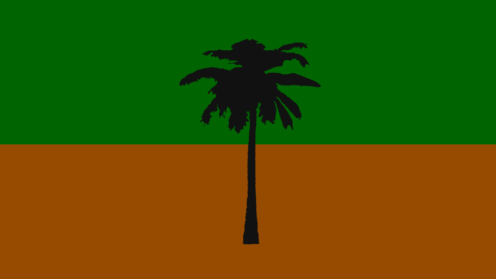
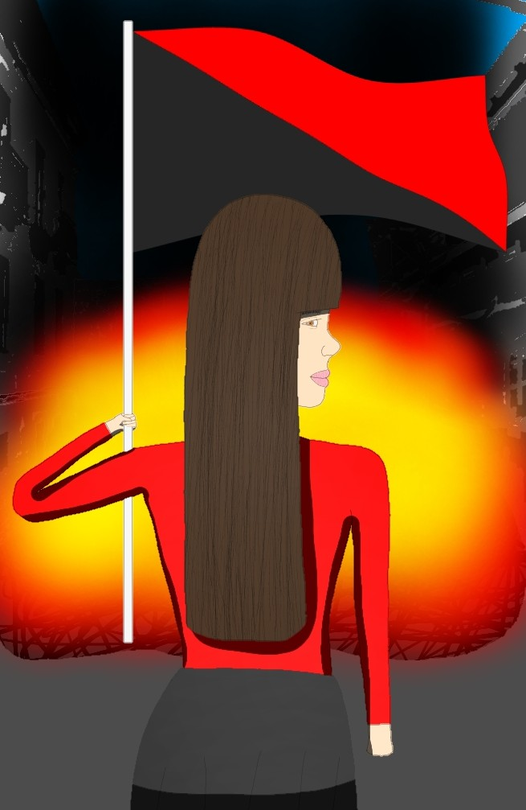
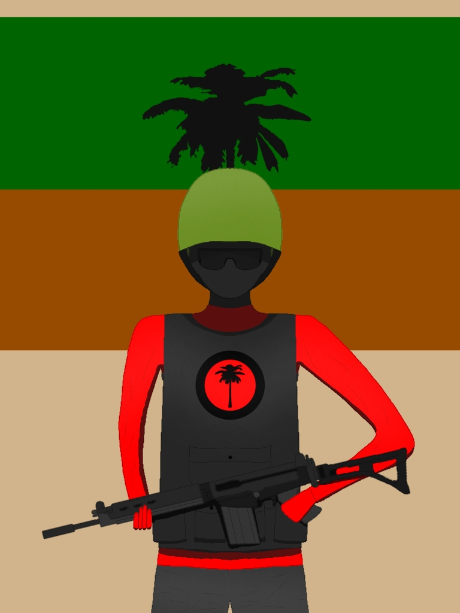
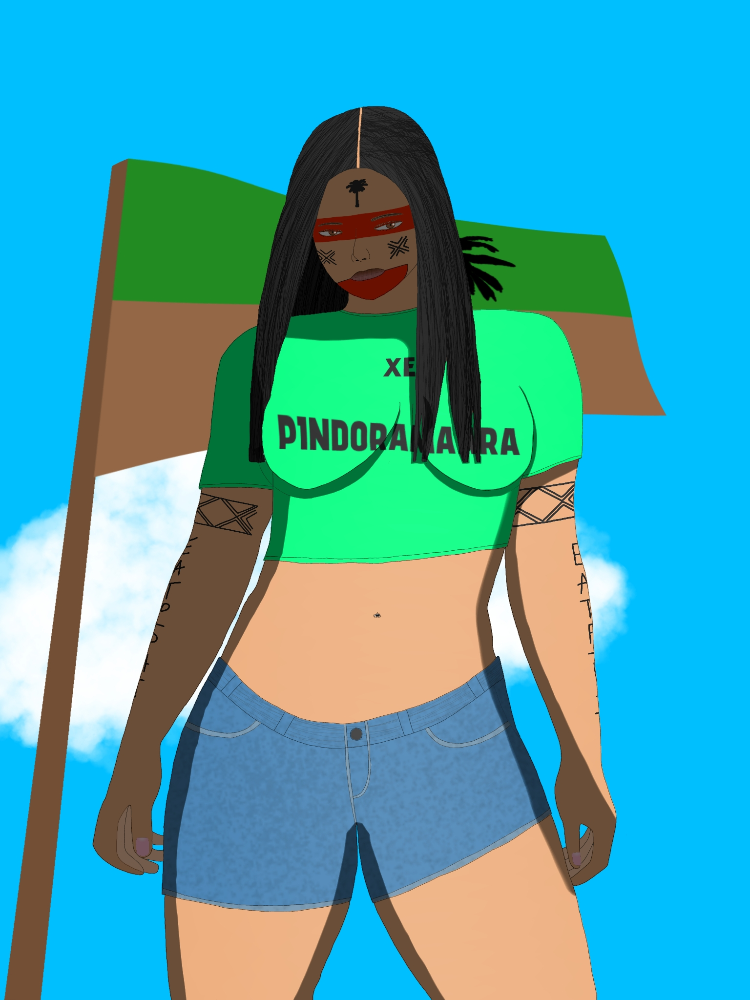
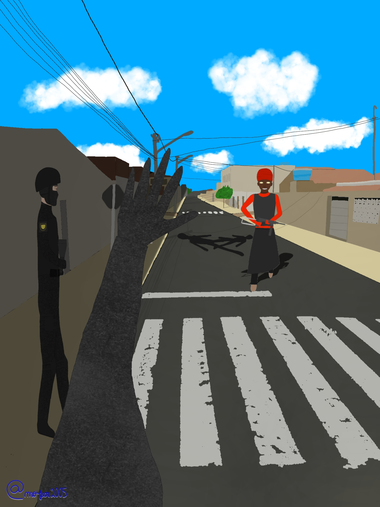

Página de Artes
Artes conceituais da obra Tabaguasu Pindorama, produzidas por Moisés Ferreira (Ibis Paint).

Bandeira de Pindorama
A bandeira de Tabaguasu Pindorama
A bandeira de Tabaguasu Pindorama

Sy Pindorama
Entidade simbólica de Pindorama
Entidade simbólica de Pindorama

Pomba-anarco
Símbolo espiritual-anarquista
Símbolo espiritual-anarquista

Guerrilheiro de Pindorama

Tatiane com símbolo de Pindorama

Soldados da E.A.T.P em expedição na mata

Soldados da E.A.T.P erguendo bandeira

Soldados da E.A.T.P saudando o povo

Tatiane com visual ancestral e bandeira

Soldado desertado rumo a Pindorama

Implante de Pindorama — postagem de Taba

Bandeira simpatizante de Tabaguasu Pindorama

Indígena militante da E.A.T.P

Filha da mata pindoramense

Ataque da portadora de Padilha